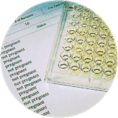

BioPRYN® Blood Pregnancy Testing
You don't milk your cows by hand anymore. Now you don't have to pregnancy check them the old way either. BioPRYN is a safe, accurate and inexpensive blood test for pregnancy in cattle, bison, goats and sheep.
Why blood testing
Safe
A small (2cc) sample of blood, drawn 28 days or more after breeding, is all that is required to run the pregnancy assay. Blood sampling is safer than either palpation or ultrasound, in addition to being more accurate.
With BioPRYN, no embryo or uterine touching is required, eliminating this possible cause of pregnancy damage and loss. Unlike rectal techniques, using single-use blood collection needles for pregnancy diagnostics eliminates disease transmission between herd mates. From a human safety standpoint, cows appear less apprehensive and are generally more accepting of the blood sampling procedure compared to rectal palpation.
Ready to draw samples? See how to tail bleed a cow.
BioPRYN is a registered trademark of BioTracking, LLC.
The science
Accurate

The Enzyme-Linked Immuno-Sorbent Assay (ELISA) laboratory process detects the presence of a protein called Pregnancy Specific Protein B (PSPB). PSPB is produced by the developing placenta and begins circulating in the blood of pregnant cattle as early as 3 weeks of gestation. Since non-pregnant animals will not have this protein in their blood, the test is more than 99% accurate in detecting open cows.
This high accuracy of open detection gives the test an "embryo safety factor" far surpassing older progesterone-based tests. With less than a 1% error rate in open detection, the test is more accurate, and safer, than palpation or ultrasound of early pregnancies.
In addition, Early Embryonic Death (EED) can sometimes be detected by the blood test, since subnormal levels of PSPB may indicate a pregnancy in trouble.
Pricing
Inexpensive
28-Day Cattle/Bison Pregnancy Test
$3.25 per test
Goat & Sheep Pregnancy Test
$6.75 per test
Every result runs on the BioPRYN platform.
Getting started
How to get started
First, select cows at least 90 days since calving and 28 or more days from their last breeding. Samples can be collected with a syringe and needle or with the vacuum tube system.
Ready to draw samples? See how to tail bleed a cow.
Using a new needle for each cow, draw 2cc of whole blood into a new red-top tube clearly labeled with the animal ID. Package tubes in padding for safe delivery, then see our shipping instructions and download the test form to mail in with your blood sample.
Forms
Download your submission form
Learn how you can adopt this and other technologies to increase your herd's profitability through improved reproductive management. Call us at (715) 653-2201 or email us for more information.
Ask about new client discounts